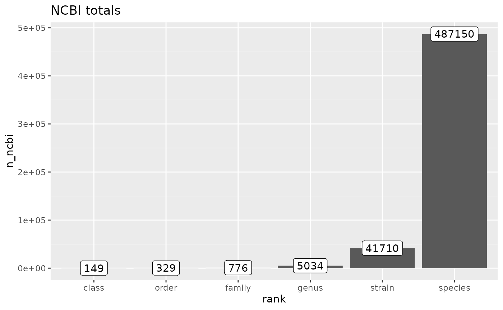
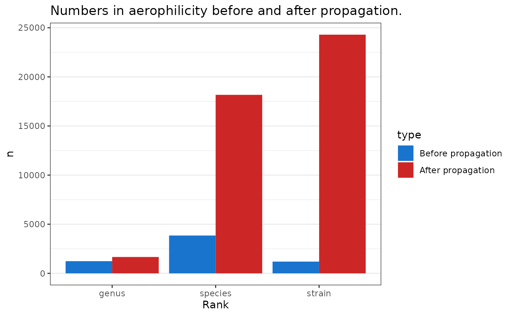
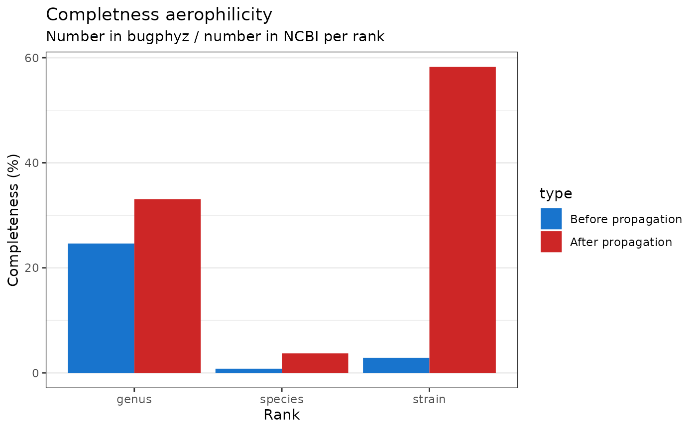

Example of upstream and downstream with aerophilicity
2022-08-18
Source:vignettes/articles/spore_shape.Rmd
spore_shape.RmdAttribute with discrete characters
aer <- as_tibble(physiologies('aerophilicity')[[1]])
dim(aer)
#> [1] 6398 15
aer_extended <- propagate(aer)
#> Getting new species with asr-tax. (Step 1 - upstream).
#> Getting new genera with asr-tax. (Step 2 = upstream).
#> Getting new species with inh-tax. (Step 3 - downstream)
#> Getting new strains with inh-tax (Step 4 - downstream).
table(aer$Evidence)
#>
#> exp unknown
#> 1253 5145
table(aer_extended$Evidence)
#>
#> asr-tax exp inh-tax unknown
#> 971 1253 36873 5145Attribute with continuous characters
ph <- as_tibble(physiologies('optimal ph')[[1]])
ph_extended <- propagate(ph)
#> Getting new genera with asr-tax. (Step 2 = upstream).
#> Getting new species with inh-tax. (Step 3 - downstream)
#> Getting new strains with inh-tax (Step 4 - downstream).
table(ph$Evidence)
#>
#> exp
#> 886
table(ph_extended$Evidence)
#>
#> asr-tax exp inh-tax
#> 595 886 18752Completeness
ncbi_taxonomy <- get_ncbi_taxonomy() |>
mutate(strain = ifelse(rank == 'strain', tax_name, NA))
## mutate call above is just for creating a strain column
## for counts
dim(ncbi_taxonomy)
#> [1] 548054 11
head(ncbi_taxonomy)
#> # A tibble: 6 × 11
#> kingdom phylum class order family genus species NCBI_ID tax_n…¹ rank strain
#> <chr> <chr> <chr> <chr> <chr> <chr> <chr> <chr> <chr> <chr> <chr>
#> 1 Archaea NA NA NA NA NA NA 1935183 Asgard… clade NA
#> 2 Archaea NA NA NA NA NA NA 2798909 Candid… phyl… NA
#> 3 Archaea Candida… NA NA NA NA NA 2798916 Candid… class NA
#> 4 Archaea Candida… Cand… NA NA NA NA 2798922 Candid… order NA
#> 5 Archaea Candida… Cand… Cand… NA NA NA 2798928 Candid… fami… NA
#> 6 Archaea Candida… Cand… Cand… Candi… NA NA 2798934 Candid… genus NA
#> # … with abbreviated variable name ¹tax_nameGet counts
ranks <- c(
'strain', 'species', 'genus', 'family', 'order', 'class', 'phyum', 'kingdom'
)
ncbi_counts <- ncbi_taxonomy |>
dplyr::filter(rank %in% ranks) |>
count(rank) |>
set_names(c('Rank', 'n_ncbi'))
ncbi_counts |>
mutate(Rank = factor(Rank, levels = ranks)) |>
ggplot(aes(reorder(Rank, n_ncbi), n_ncbi)) +
geom_col() +
geom_label(aes(label = n_ncbi)) +
labs(
title = 'NCBI totals',
x = 'rank'
)
aer_counts <- aer |>
count(Rank) |>
set_names(c('Rank', 'n_aer'))
aer_counts
#> # A tibble: 10 × 2
#> Rank n_aer
#> <chr> <int>
#> 1 biotype 4
#> 2 genus 1240
#> 3 isolate 3
#> 4 no rank 18
#> 5 serogroup 6
#> 6 serotype 9
#> 7 species 3851
#> 8 strain 1195
#> 9 subspecies 35
#> 10 NA 37
aer_extended_counts <- aer_extended |>
count(Rank) |>
set_names(c('Rank', 'n_aer_extended'))
aer_extended_counts
#> # A tibble: 10 × 2
#> Rank n_aer_extended
#> <chr> <int>
#> 1 biotype 4
#> 2 genus 1665
#> 3 isolate 3
#> 4 no rank 18
#> 5 serogroup 6
#> 6 serotype 9
#> 7 species 18170
#> 8 strain 24295
#> 9 subspecies 35
#> 10 NA 37Calculate completeness
completeness <- reduce(
list(ncbi_counts, aer_counts, aer_extended_counts),
.f = left_join
) |>
mutate(
aer_completness = n_aer / n_ncbi * 100,
aer_extended_completeness = n_aer_extended / n_ncbi * 100
) |>
filter(Rank %in% c('strain', 'species', 'genus')) |>
select(Rank, aer_completness, aer_extended_completeness) |>
pivot_longer(
cols = 2:last_col(), names_to = 'type', values_to = 'completeness'
)
completeness
#> # A tibble: 6 × 3
#> Rank type completeness
#> <chr> <chr> <dbl>
#> 1 genus aer_completness 24.6
#> 2 genus aer_extended_completeness 33.1
#> 3 species aer_completness 0.791
#> 4 species aer_extended_completeness 3.73
#> 5 strain aer_completness 2.87
#> 6 strain aer_extended_completeness 58.2Plot completeness
completeness |>
ggplot(aes(Rank, completeness)) +
geom_col(aes(fill = type), alpha = 0.5, position = 'dodge') +
labs(
title = "Completness before and after propagation of annotaions",
subtitle = 'Completeness was calculated based on the NNCBI',
y = 'Completeness (%)'
) +
theme_bw() +
theme(
panel.grid.major.x = element_blank()
) +
scale_fill_manual(
values = c('dodgerblue3', 'firebrick3'),
labels = c('Before propagation', 'After propagation')
)
Completeness
phys = physiologies() |>
lapply(as_tibble)
phys_no_dup <- map(phys, ~ {
.x |> filter_dataset_for_propagation() |>
# remove_taxa_duplicates() |>
ci_to_scores() |>
distinct()
}) |>
keep(~!nrow(.x) == 0)
phys_filtered_counts <- map(phys_no_dup, ~ {
counts <- table(.x$Rank)
tibble::tibble(rank = names(counts), n = as.integer(counts))
}) |>
bind_rows(.id = 'dataset')
phys_filtered_counts |>
ggplot(aes(reorder(dataset, n), n)) +
geom_col(aes(fill = rank)) +
labs(
title = 'Totals across bugphyzz datasets',
x = 'dataset'
) +
theme(
axis.text.x = element_text(angle = 45, hjust = 1)
)
phys_counts <- map(phys, ~ {
.x <- dplyr::filter(.x, Rank %in% ranks)
counts <- table(.x$Rank)
tibble::tibble(rank = names(counts), n = as.integer(counts))
}) |>
bind_rows(.id = 'dataset')
phys_counts |>
ggplot(aes(reorder(dataset, n), n)) +
geom_col(aes(fill = rank)) +
labs(
title = 'Totals across bugphyzz datasets',
x = 'dataset'
) +
theme(
axis.text.x = element_text(angle = 45, hjust = 1)
)